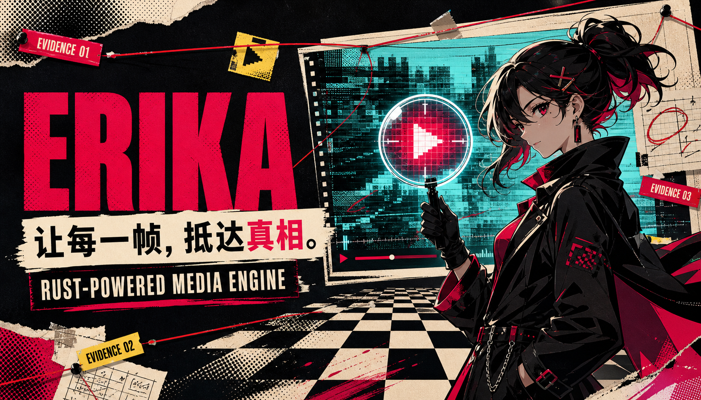

01DECODE
硬解，不绕路
VideoToolbox、D3D11VA、MediaCodec 与 AVCodec 各就各位；互操作不可用时，回退路径同样清清楚楚。
NipaPlay 自研 · 跨平台播放内核
从硬件解码、音画同步到 HDR 渲染、字幕与弹幕合成， Erika 用 Rust 把完整播放栈装进一个可嵌入的内核。

THE CASE / 项目是什么
宿主应用只需提供一个渲染表面并发送播放命令。解码、时序同步、 音视频渲染、字幕、弹幕与音频输出，全部在 Erika 内部完成。
我是 Erika，是 NipaPlay 里继 mdk、video_player、libmpv、media_kit 之后的第五个播放器内核。
—— 案件记录 #0005“Erika”取自《海猫鸣泣之时》的侦探古戸ヱリカ。官网以侦探、证据与真相为灵感， 为这个幕后播放引擎建立一套属于自己的视觉身份。
THE EVIDENCE / 能力证据
一条可以解释、可以回退、
也可以继续进化的播放路径。
VideoToolbox、D3D11VA、MediaCodec 与 AVCodec 各就各位；互操作不可用时，回退路径同样清清楚楚。
从 CVPixelBuffer、D3D11VA 纹理到 AHardwareBuffer，尽量不在 CPU 与 GPU 之间来回搬运。
覆盖 Apple EDR、Windows HDR10 与 Android FP16 extended-linear scRGB，并为 SDR 准备明确退路。
ArtCNN 只处理亮度，以 Metal 或 wgpu/Vulkan compute 接入渲染管线，把线条与细节重新找回来。
SRT、WebVTT、ASS 与 Bilibili 弹幕进入同一套合成流程；DFM+ 负责碰撞避让，GPU 负责流畅呈现。
C ABI、Flutter 插件与原生 surface 接入，让 C/C++、Swift、Dart 以及任何 FFI 语言都能调用完整播放栈。
文件 · 网络 · 自定义 IO
平台能力优先，软解兜底
音频主时钟 · vsync 量化
视频 · HDR · 字幕 · 弹幕
一帧不落，准时抵达
THE TERRITORY / 平台支持
Metal · CoreAudio
可用 · 14+Metal · AudioQueue
可用 · 16+Metal · AudioQueue
可用 · 13+D3D11 · WASAPI
可用 · 10+Vulkan/GLES · AAudio
可用 · 8+Vulkan · OHAudio
可用 · API 18+＋ Linux / wgpu 支持正在规划中
VERSION INTEL / 版本情报
FIRST CLUE / 快速开始
先让它播放起来，再深入每一条渲染路径。
use erika::{Player, PlayerConfig, MediaRequest};
let player = Player::new(PlayerConfig::default())?;
player.open(MediaRequest::file("/path/to/video.mp4"))?;
player.play()?;final player = ErikaPlayer();
await player.open('/path/to/video.mp4');
await player.play();
ErikaWindowOverlayVideoView(player: player);Erika 已经把播放路径整理成一份可以验证的证词。
在 GitHub 查看项目